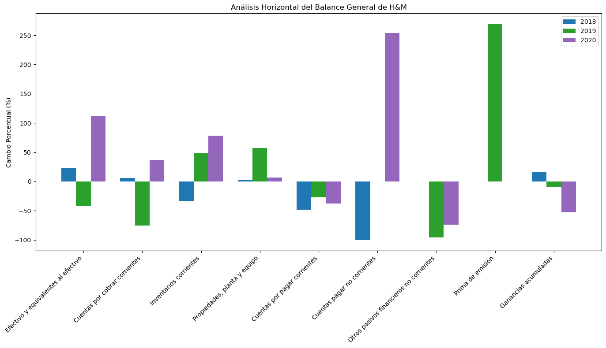

Ejercicio clasificación¶
Utilice la base de datos Classification.csv para crear un modelo que
clasifique los datos con una accuracy de al menos un 90%.
import pandas as pd
import numpy as np
import matplotlib.pyplot as plt
df = pd.read_csv("Classification.csv", sep = ";", decimal=",")
print(df.head())
X1 X2 y
0 -16.374564 211.035503 1
1 -21.845987 6.262558 1
2 -7.987957 -8.449664 0
3 11.008814 82.381994 0
4 3.524531 35.596753 0
plt.scatter(df["X1"], df["X2"], c = df["y"])
plt.xlabel("X1")
plt.ylabel("X2");

X = df[["X1", "X2"]]
print(X.head())
X1 X2
0 -16.374564 211.035503
1 -21.845987 6.262558
2 -7.987957 -8.449664
3 11.008814 82.381994
4 3.524531 35.596753
X.shape
(10000, 2)
y = df["y"]
print(y.head())
0 1
1 1
2 0
3 0
4 0
Name: y, dtype: int64